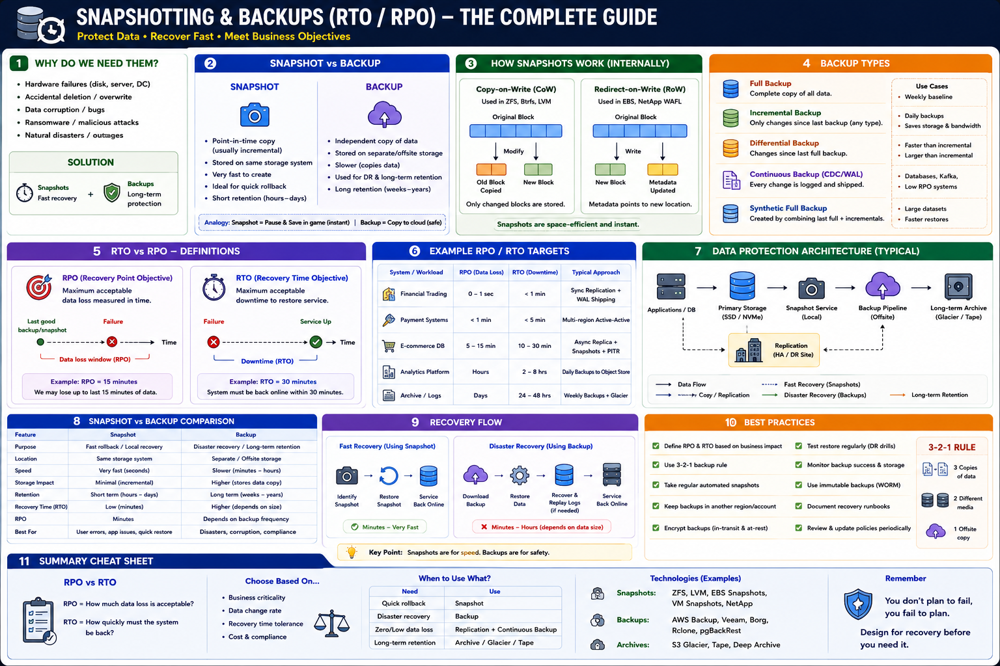

How production systems protect data, recover from failures, and meet business recovery objectives
The Big Picture
Production systems will eventually fail — disk failures, bugs, human mistakes, ransomware, datacenter outages. Every critical system needs four protection layers: Replication → Snapshots → Backups → Archive. Each solves a different recovery problem.
RPO & RTO — The Business Contract
RPO — Recovery Point Objective
"How much data loss is acceptable?"
The maximum age of files that must be recovered from backup storage for normal operations to resume. Lower RPO → more frequent backups or WAL shipping.
Example: RPO = 15 min → max 15 min of data lost
RTO — Recovery Time Objective
"How quickly must the service recover?"
The maximum tolerable length of time that a system can be offline after a failure. Lower RTO → standby infrastructure, automation, fast restore paths.
Example: RTO = 30 min → service back in 30 min
| System | Typical RPO | Typical RTO |
|---|---|---|
| Banking / Trading | 0–1 second | <5 minutes |
| Payment Systems | <1 minute | <5 minutes |
| E-commerce | 5–15 minutes | <15 minutes |
| Internal Services | Hours | Hours |
| Archive / Compliance | Days | Days |
Reducing RPO requires more frequent snapshots, WAL shipping, or continuous replication. Reducing RTO requires automated failover, standby systems, and fast restore paths. Both together drive infrastructure cost.
Core Concepts
| Concept | Purpose | RTO | RPO |
|---|---|---|---|
| Snapshot | Point-in-time copy, fast rollback | Minutes | Minutes |
| Backup | Independent copy, disaster recovery | Hours | Hours |
| Replication | Live copy, high availability | Seconds | Seconds |
| Archive | Long-term, low-cost, compliance | Hours–Days | Days |
Snapshot Internals
Modern snapshots are space-efficient using incremental techniques:
Copy-on-Write (CoW)
Used by: ZFS, Btrfs, LVM
Redirect-on-Write (RoW)
Used by: AWS EBS, NetApp WAFL
Both techniques store only changed blocks, making snapshots incremental and storage-efficient. The snapshot metadata points to unchanged blocks in the original volume.
Backup Types
| Type | What is Backed Up | Storage | Restore Speed |
|---|---|---|---|
| Full | Everything | Largest | Fastest |
| Incremental | Changes since last backup | Smallest | Slower (chain) |
| Differential | Changes since last full | Medium | Balanced |
| Continuous | Every change via WAL/logs | Medium | Fast + flexible |
Continuous backup via WAL shipping provides the lowest RPO (near-zero) since every committed transaction is streamed to the backup location. Used by PostgreSQL, MySQL, and most production databases.
Snapshot vs Backup
| Feature | Snapshot | Backup |
|---|---|---|
| Recovery Speed | Very Fast (minutes) | Slower (hours) |
| Storage Location | Same system (local) | Remote / offsite |
| Cost | Lower | Higher |
| Retention | Short (days–weeks) | Long (months–years) |
| Disaster Recovery | Limited | Excellent |
| Rollback (mistakes) | Excellent | Moderate |
| Corruption protection | Partial (same storage) | Full (independent) |
Replication vs Backup — Critical Distinction
| Feature | Replication | Backup |
|---|---|---|
| Type | Live copy | Independent copy |
| Purpose | High Availability | Disaster Recovery |
| Data corruption | Propagates immediately | Preserves historical state |
| Failover | Fast (seconds) | Slow (hours) |
| Retention | Current state only | Historical versions |
Replication does NOT replace backups. If corrupted data is replicated, every replica becomes corrupted too. A backup is the final line of defense for data recovery.
The 3-2-1 Backup Rule
Example:
Disaster Recovery Flow
Cloud Provider Support
| Platform | Snapshot | Backup |
|---|---|---|
| AWS | EBS Snapshots | AWS Backup / S3 Glacier |
| Azure | Managed Disk Snapshots | Recovery Services Vault |
| Google Cloud | Persistent Disk Snapshots | Backup & DR / Cloud Storage |
| Kubernetes | CSI Volume Snapshot | Velero |
Real-World Examples
PostgreSQL — Point-in-Time Recovery
AWS EBS — Incremental Snapshots
Elasticsearch — Snapshot Repository
Kubernetes — Velero
Performance vs Cost Trade-offs
| Strategy | Cost | RTO | RPO |
|---|---|---|---|
| Snapshot Only | Low | Fast | Medium |
| Backup Only | Medium | Slow | High |
| Replication Only | High | Very Fast | Very Low |
| Snapshot + Backup | Medium | Fast | Low |
| Replication + Snapshot + Backup | Highest | Best | Best |
Staff Engineer Thinking
Junior
Should we take backups?
Senior
How often should backups run?
Staff asks
Production Failure Scenarios
Snapshot Lost
Cause: Storage array failure · Fix: Maintain independent offsite backups; never rely on snapshots alone
Data Corruption Propagated
Cause: Application bug replicated to all replicas immediately · Fix: Restore from immutable backup or replay WAL to pre-corruption point
Slow Disaster Recovery
Cause: No snapshots; relying solely on large full backup restore · Fix: Use snapshots with incremental WAL backups to reduce RTO
Backup Restore Failure
Cause: Backups never tested; silent corruption or format changes · Fix: Run regular automated restore drills; verify checksums
Ransomware Attack
Cause: All production and backup data encrypted by attacker · Fix: Immutable, air-gapped, offsite backups (S3 Object Lock, WORM)
Staff Engineer Decision Framework
| Requirement | Recommended Strategy |
|---|---|
| Fast rollback (mistakes) | Snapshot |
| Disaster recovery | Backup (offsite) |
| High availability | Replication |
| Compliance / audit | Archive |
| Low RPO (<1 min) | Continuous WAL + Replication |
| Low RTO (<5 min) | Automated Failover + Snapshots |
| Maximum resilience | Replication + Snapshots + Backups |
Production Readiness Checklist
Key Takeaways
